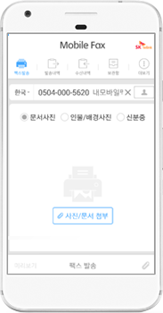
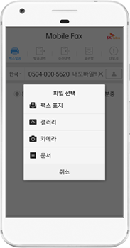
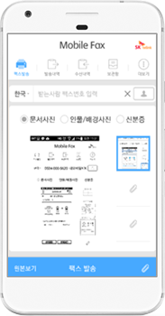
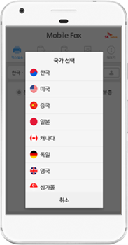
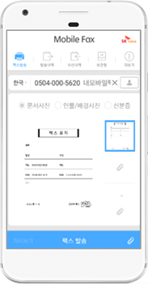
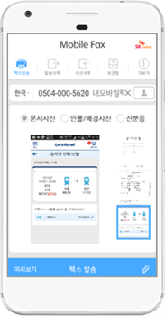

Mobile FAX App 소개
모바일팩스
스마트폰 앱을 이용해 시간과 장소 구분없이
국내와 해외로 팩스를 편리하게 주고 받아보세요.
스마트폰 사용자를 위한 저비용, 고효율에
최적화된 문서 전달 서비스입니다.
스마트폰 사용자 대상 저비용, 고효율 최적화된 문서 전달 서비스 모바일 팩스
간편하게 이용 가능한 스마트폰 앱 서비스!
국내 최초로 MMS 문자를 활용하고 개개인 팩스 번호를 할당받아 이용할 수 있습니다.
특징을 확인해보세요
-
- 언제 어디서나
팩스 서비스 이용가능 - 스마트폰 앱을 통해 언제 어디서나
간편하게 팩스 송/수신이 가능합니다.
- 언제 어디서나
-
- 저렴한 비용으로
팩스 서비스 이용 - 일반 팩스보다 비용이 저렴하고,
이통사 요금제 가입의 고객은
요금제 일정 범위 내에서 할 수 있습니다.
- 저렴한 비용으로
-
- 간편한
가입절차 및 이용 - 스마트폰 스토어에서
모바일팩스 앱을 다운받고 가입한 후
편리하게 이용 할 수 있습니다.
- 간편한
이용방법
모바일 일반 팩스 발송
스마트폰 내 문서,
사진을 선택하거나 직접 사진을 찍어 첨부한 후 팩스 번호만
입력하면 바로 팩스를 보낼 수 있습니다.
-
Step 01

팩스 번호 입력 및 팩스 파일 종류 선택
(문서사진, 인물/배경사진, 신분증) -
Step 02

팩스 보낼 파일 선택
(팩스표지, 갤러리에서 사진 선택,
카메라 촬영, 스마트폰에 저장된 문서) -
Step 03

팩스 발송
국제팩스
국내 팩스 뿐 아니라
주요 10개 국가에 국제 팩스 발송도 가능하며, 팩스표지 추가,
다수 파일 전송 및 팩스 전송 이미지 미리 보기 등
다양한 부가 기능을 제공합니다.
-

국제발신
주요 10개국 발송 가능
-

팩스표지
송/수신자의 정보와
간략한 내용 기재 가능 -

다수파일 전송기능
팩스 여러 장을
한번에 발송 가능 -
미리보기
팩스출력 시 화면은
미리 보여주는 기능